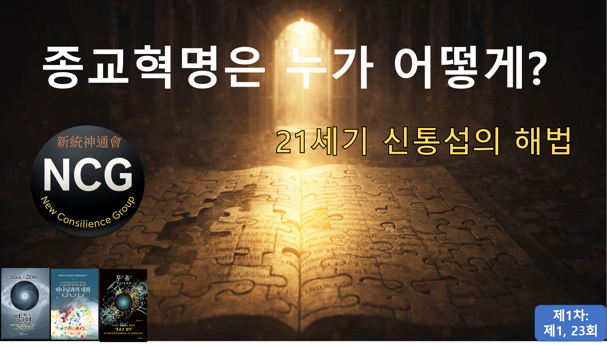

신통신통회(NCG) 시리즈 – 제1차
종교혁명은 누가 어떻게? — 21세기 신통섭의 해법
종교는 껍데기만 남았고, 믿음은 진리로부터 멀어졌습니다.
참된 종교는 교리가 아니라 성찰에서 시작합니다.
오늘의 종교는 부와 권력, 외형이 진리와 양심을 대신해 왔습니다.
공자·부처·예수의 핵심 가르침은 놀라울 만큼 일치합니다.
진리를 알고, 마음을 닦고, 성실하게 살아가라는 것입니다.
신통신통회(NCG)는 선언합니다.
“진리를 추구하고 신성을 실현하는 첫걸음은 종교혁명이다.”
왜곡된 교리에 대한 맹목적 복종에서 벗어나,
21세기 참된 종교혁명에 함께해 주십시오.
🧭 종교혁명은 누가, 어떻게? — 제1회 & 제23회
1️⃣ 제1회 — 종교혁명의 태동
저자 소개와 신통신통회(NCG) 소개, 그리고 문제 제기의 출발점.
▶ 제1회 시청
2️⃣ 제23회 — 종교혁명의 시작
교리 반문과 종교권력 책임 선언 — 성현들의 가르침을 회수하라.
▶ 제23회 시청